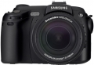

Pro 815 采用800万有效像素2/3英寸CCD和15倍光学变焦镜头，搭载3.5英寸液晶显示屏。
造型威猛，操作复杂，界面简单。顶屏很有趣，但是只能适合收藏和对画质要求不高的朋友。成像必然没法和单反相比
一体机不会进灰，一机走天下哦。施耐德镜头保证。大屏幕相机。长焦端成像还能保证。逆光表现还好。绿色表现很好
大屏幕图像不鲜艳，操作复杂。
总体感觉不错，颜色偏淡（不过我不认为是缺点），可以一机走天下
1.超长焦 2.超微距 3.大广角 4.手动功能齐全 5.3.5"大屏幕 6.功能超齐全 7.大光圈 8.多模式高速连拍 [wggg 编辑于 2006-03-10 18:51]
1.不能用5#电池 2.没有防抖（好在经常带着角架） 3.长焦和暗处对焦速度慢 4.手动对焦有延时 [wggg 编辑于 2006-03-31 09:36]